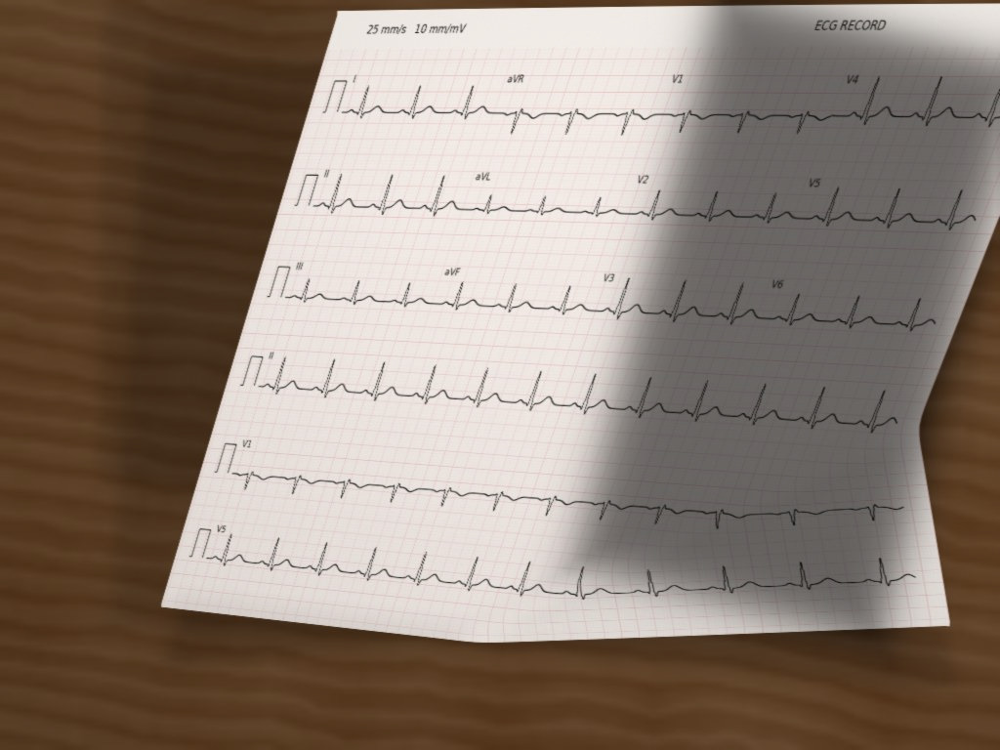

Gorgona
Implantação em UPA · 2026
Liderei o Gorgona, que analisa ECGs de UPAs de Salvador no servidor do InCor e envia alertas pelo Telegram, em paralelo à telemedicina.
São Paulo, Brasil
Sou especialista sênior de P&D na Samsung e doutor pela USP. Trabalho com inteligência artificial aplicada à saúde, processamento de sinais e validação de modelos, do desenvolvimento à implantação.

Implantação em UPA · 2026
Liderei o Gorgona, que analisa ECGs de UPAs de Salvador no servidor do InCor e envia alertas pelo Telegram, em paralelo à telemedicina.

Integração hospitalar · 2023–2026
No InCor, desenvolvi modelos para classificar ECGs na emergência. Coordenei a anotação dos exames com cardiologistas e trabalhei na integração com o sistema do hospital.

1º lugar · Equipe AIMED · 2024
Liderei a AIMED na classificação de imagens de ECG. Usamos pré-treinamento e um ensemble de cinco modelos ConvNeXt.

Protótipo e pesquisa · 2022–2026
Trabalhei com a equipe no monitoramento remoto por relógios, desde os protocolos de coleta até o processamento de PPG e os algoritmos no celular.

De sinais para imagens de ECG, dentro do treinamento em PyTorch.
Um modelo de linguagem consegue desenhar a silhueta do corpo só com coordenadas?